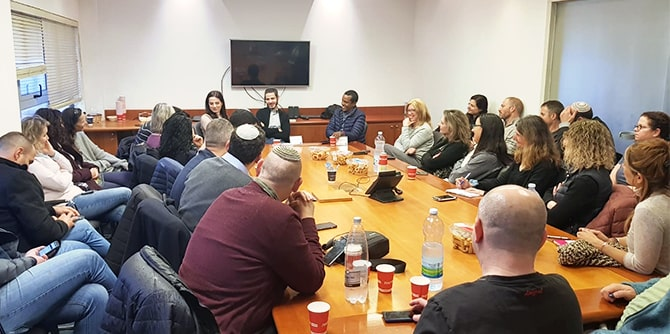

גיוון ושילוב של עובדים מרקעים תרבותיים וחברתיים שונים הוא עניין מורכב, ועל כן ארגונים רבים ממשיכים לדבוק בקיים ובמוכר. הסמינר ביקש להעלות את המודעות לכך שגיוון תעסוקתי הוא משימה מנהיגותית וניהולית הדורשת מודעות, רצון והחלטה – לא רק לראות את השונה אלא גם לבחור בו. במהלך הסמינר, שנמשך יומיים, הוצגו מודלים שונים של צוותים מגוונים ונדונו היתרונות בבחינת "השלם גדול מסכום חלקיו", לצד אתגרים הנובעים משונות ומגיוון פנים-ארגוני.
הסמינר החל במפגש בבית הלוחם בירושלים.
משה ויגדור מנכ"ל קרן מנדל-ישראל ודני בר גיורא מנהל בית ספר מנדל למנהיגות חינוכית בירכו את הבוגרים בפתיחת המפגש.
שרונה בר-נס, חברת צוות בכירה ביחידת בוגרי מנדל ויוזמת הסמינר, פתחה את האירוע בדברים על פרשת השבוע בהקשר של נושא הסמינר: "רובנו נוהגים לבחור את הדומים לנו והמושלמים בעינינו, ולרוב בחירה זו נעשית באופן בלתי מודע. מפגשי הסמינר נועדו לעורר שאלות ולהעלות מודעות לכך".

אחר כך נפגשו הבוגרים עם רועי בן טולילה, אשר נפצע קשה במהלך שירותו הצבאי כקצין ביחידת מגלן. בעקבות הפציעה וההתמודדות עם מצבו החדש עבר רועי תהליך עמוק ודרמטי של שינוי. הוא סיפר שהחשש הגדול ביותר שלו היה "להפסיק להיות משמעותי עבור אחרים". כיום הוא עומד בראש חברה שהקים, העוסקת בפיתוח מנהיגות עסקית וחברתית, ומשחק כדורסל בכיסאות גלגלים בבית הלוחם בירושלים. בשש השנים האחרונות הוא חבר בנבחרת ישראל בכדורסל בכיסאות גלגלים ומתחרה בארץ ובעולם. הבוגרים שמעו מרועי על תהליך השיקום שלו ועל פועלו לפיתוח מנהיגות וצוותים, בדגש על יכולותיו האישיות הטבעיות של האדם. לאחר מכן גיבשו הבוגרים נבחרת ושיחקו כדורסל בכיסאות גלגלים נגד רועי ונדב, חברו לנבחרת בית הלוחם. מיותר לציין שרועי ונדב ניצחו את נבחרת בוגרי מנדל.
אחר כך ביקרו הבוגרים במרכז הרפואי שערי צדק ושמעו מפיו של המנכ"ל,
פרופ' עופר מרין, על הערך שמייחס בית החולים לגיוון הפנים-ארגוני ועל האופן שבו ההטרוגניות תורמת לארגון. הוא שיתף גם בדילמות אתיות ומוסריות שעמן התמודד כאשר יצא בראש משלחת סיוע לנפאל לאחר רעידת האדמה, וסיפר כיצד פערים תרבותיים הציבו אותו בפני דילמות מקצועיות. ד"ר אלון שוורץ, מנהל חדר הטראומה, הדגיש את החשיבות של הטרוגניות כערך והדגים כיצד הדבר בא לידי ביטוי בעבודת הצוותים המגוונים במחלקה שהוא עומד בראשה.

בערב שמעו הבוגרים מפיה של עו"ד מור ברזני, ראש האגף לגיוון תעסוקתי בנציבות שירות המדינה, על הניסיון של הממשלה לעשות רגולציה ולקדם גיוון תעסוקתי. היא הצביעה על ההשפעה שיש לכך על החוסן הלאומי ועל האמון שהציבור רוחש לממסד.
לאחר מכן קיימו הבוגרים פעילות בקבוצות, כדי לעבד את החוויות ולזקק תובנות שעלו מהמפגשים. כמו כן דנו בשאלה כיצד אפשר ליישם העסקה מגוונת באופן מיטבי. ביום שישי בבוקר נסעו הבוגרים לחברת החדשות, שם צפו בפאנל שבו השתתפו העיתונאים דפנה ליאל, כתבת לענייני הכנסת,
ברהנו טגניה, כתב לענייני פלילים, ויאיר שרקי, כתב לענייני דתות. את הפאנל הנחו בוגרי מחזור כ"ד
ד"ר דיאנה דעבול ועשהאל שריר שראיינו את העיתונאים על חדשות ופרשנות, ודנו בשאלה כיצד שונות הופכת למשאב במרחב המקצועי שלהם, ומה השפעתו של הגיוון על השיח החדשותי ועל הרייטינג. לאחר מכן ערכו הבוגרים סיור בחברת החדשות וראו כיצד נרקם שיתוף הפעולה בין חברי הצוות ובעלי התפקידים השונים מראשית התהליך העיתונאי ועד לתוצר הסופי שבו אנו צופים בשידור. בוגרת מחזור כ"ה,
אילנה שריג היוז, מנהלת תוכנית "מובילי לכידות חברתית" של מכון מרחבים – עמותה הפועלת ליצירת קהלים וארגונים הטרוגניים המשלבים מגוון אוכלוסיות בחברה הישראלית, הביאה שאלות ותובנות מהשטח בנושא של רבגוניות ולכידות חברתית.

את הסמינר נעל בוגר מחזור ג',
ד"ר יהודה מימרן, יועץ ביחידת הבוגרים, שהנחה תהליך של משוב וזיקוק תובנות. את הסמינר גיבשו והובילו
שרונה בר-נס, חברת צוות בכירה ביחידת בוגרי מנדל,
ד"ר יהודה מימרן ובוגרי מחזור כ"ה
חנה ימין שרקי וחיים שמילה.
{kind=link}